The people who do the work
Structured conversations with the GEMIS onboarding team, the product owner and internal developers — the people who capture client data, own the roadmap and will build the result.
GEM Information Systems · Product Design Case Study
How GEM Information Systems rebuilt enterprise software around the one moment that kills most ERP rollouts — day one.
A real internal product initiative at GEMIS. I led the end-to-end redesign — UX strategy, information architecture, interaction design, interface design, workflows, the design system, prototyping and stakeholder presentations. The redesign was reviewed and approved internally as the direction for implementation; it has not yet entered production, so this case study contains no production analytics and no external usability claims.

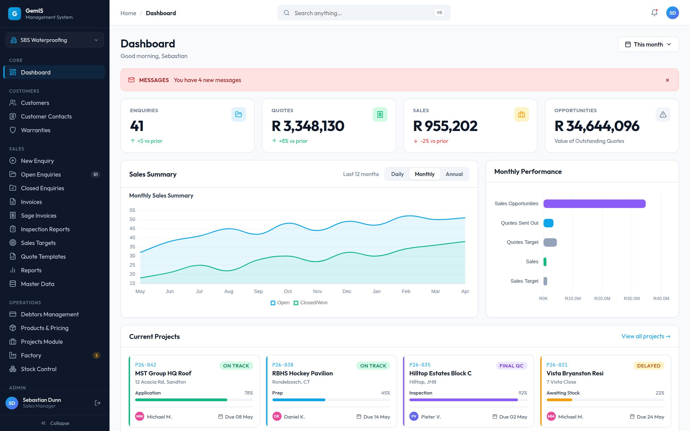
01 · The challenge
GEM Information Systems already had a working, feature-complete platform. Ten modules. Real workflows. A Sandton-based waterproofing and pool-solutions contractor running actual sales, production, stock and debtor operations through the existing GemIS system every day. The redesign documented here — ManaGem and Take-On — is the approved next generation of that platform, developed as an internal initiative and not yet deployed to production.
The problem wasn't the software. It was everything that had to happen before the software could be used. Every new client meant weeks of spreadsheet wrangling: customer ledgers in one format, product price lists in another, staff registers in a third, all hand-typed into the system before a client could log in and see their own business reflected back at them. The ERP was excellent. The runway to it was not — and in enterprise software, a bad runway is a hidden top-of-funnel leak: deals stall, momentum dies, and champions inside the client business lose the political capital that got the project approved in the first place.
This case study covers two things designed as one system: ManaGem, the core management platform, and Take-On, the AI-powered onboarding product built to get a client from "signed contract" to "working system" without a single manual data-entry session — while satisfying the compliance expectations that large South African companies rightly hold AI-touched business data to.
Together, they answer the one question a CFO or operations director will always ask before signing: "What actually happens between us saying yes and our team using this?" The honest, specific, compliance-aware answer to that question is the product this case study documents.
02 · Why an ERP for trade businesses has to be different
Off-the-shelf ERPs force contractors into the loosest-fitting category. But a trade business generates revenue through one chain, and ManaGem treats that chain as one coordinated object. Every module is legible by where it sits on the chain — not just what data it stores.
Customer
Take-On
Sales
Quotation
Deposit
Production
Inventory
Take-On
Delivery
Invoice
Accounting
Payment
A chain-shaped product creates a chain-shaped onboarding problem: you cannot "half-migrate" a contractor. If customers land in ManaGem but products don't, sales reps can't quote. If staff records are missing, jobs can't be assigned. The system only starts paying for itself the moment the whole chain is populated and trustworthy — which made onboarding not a support task bolted onto the product, but a product in its own right.
03 · How discovery was conducted
Discovery combined internal stakeholder conversations, platform walkthroughs, workflow analysis, existing documentation review and observation of operational processes. No formal external usability testing was conducted — and for an internal enterprise redesign, that was the appropriate scope: the people who onboard clients, own the product and build it work inside GEMIS, the legacy platform was available to walk through end-to-end, and real client workflows were already documented in the business.
Discovery evidence Structured conversations with the GEMIS onboarding team, product owner and internal developers · analysis of the existing platform · client workflow discussions · review of existing documentation.
Signed contract
Trust & consent
Company profile
Document upload
AI extraction
Guided validation
Client confirmation
GEMIS QA sign-off
Live in ManaGem
Once this journey was mapped, it became clear: a client handing over their customer ledger and staff register is handing over the two most sensitive lists in their business. Every design decision in Take-On follows from that one realisation.
Structured conversations with the GEMIS onboarding team, the product owner and internal developers — the people who capture client data, own the roadmap and will build the result.
End-to-end walkthroughs of the existing GemIS platform, cataloguing interaction patterns that slowed daily work — always-visible destructive actions, text-only statuses, 15+ near-identical admin tables.
Client workflow discussions and review of existing documentation: what documents businesses actually keep — Excel ledgers, PDF price lists, out-of-date staff registers — and where misreading them concentrates risk.
Observing manual onboarding revealed the invisible steps — duplicate checks, phone-format validation, blank-field flags — that the product would now have to make explicit.
04 · Operational roles framework
Rather than fictional personas, the redesign was grounded in an operational roles framework — the real functions inside a trade business, what each is accountable for, and what information each needs to make its decisions. Every screen in ManaGem answers to at least one row of this table.
| Operational role | Primary responsibilities | Business goals | Critical decisions | Information required | Dependencies |
|---|---|---|---|---|---|
| Business Owner | Overall trading performance, approvals, pricing policy, credit policy | Margin, cash flow, controlled growth | Pricing and credit terms, capacity investment, hiring, escalations | Consolidated KPIs, debtors ageing, pipeline vs production load, critical alerts | Every module — final approver across the chain |
| Sales | Enquiries, quotations, invoicing, customer relationships | Conversion, promises the business can keep | Quote pricing within policy, delivery commitments, follow-up priority | Price lists, stock availability, production status, customer history and credit state | Products & Pricing, Factory status, Stock, Debtors |
| Factory | Scheduling builds, quality control, foreman assignment | On-time completion, capacity utilisation | Job sequencing, delay escalation, QC pass/fail | Job specifications from quotes, material availability, due dates, stage progress | Sales (incoming jobs), Stock (materials), Delivery |
| Inventory | Receiving, movements, dispatch, stocktakes, purchasing | Availability without over-holding capital in stock | Reorder timing, supplier selection, warehouse and bay allocation | Stock levels per warehouse/bay, purchase orders, production consumption | Factory demand, suppliers, Finance (PO approval) |
| Finance | Invoicing, debtors management, Sage synchronisation, VAT | Collection days down, clean reconciliation | Credit-control actions, payment plans, write-off recommendations | Invoice status, Sage sync state, ageing, deposits received | Sales invoices, Sage Accounting, Business Owner approvals |
| HR | Staff records, roles and permissions, user onboarding | Accurate records, correct system access per person | Role-to-permission mapping, account provisioning and deactivation | Staff register, role tiers, module access requirements | Admin zone; every module consumes its user accounts |
| Operations | Cross-module coordination, projects, day-to-day escalations | The chain keeps moving — no stage starves the next | Prioritisation across jobs, resource allocation, escalation timing | Cross-module status, alerts, bookings, delivery schedules | Sales, Factory, Stock and Finance simultaneously |
05 · Operational insights
Discovery findings were recorded as operational insights rather than empathy maps: what was observed in the legacy platform and the business, what it costs, and what the redesign does about it.
ObservationSales teams lacked visibility into production progress.
Business impactDelivery expectations became difficult to communicate accurately.
Design responseProduction status became visible earlier in the quotation workflow, and Factory alerts surface in the navigation for downstream roles.
ObservationStatus lived as plain text inside records in the legacy platform.
Business impactOperational state was invisible while scanning lists — delays were found, not seen.
Design responseA semantic StatusBadge system: state legible at a glance, colour reserved exclusively for meaning.
ObservationEvery legacy table row carried always-visible Edit and Delete buttons.
Business impactVisual noise multiplied by every row, and destructive actions sat one accidental click away.
Design responseRow actions moved behind a hover-revealed menu, with confirmation required on anything destructive.
ObservationEvery new client required weeks of manual data capture by GEMIS staff.
Business impactDeals stalled at their highest-energy moment; onboarding consumed skilled internal capacity.
Design responseTake-On — onboarding designed as a product, with AI extraction drafting what humans previously typed.
ObservationClient source documents are inconsistent by nature — one ledger has a phone column, another doesn't.
Business impactSilent import errors surface weeks later as broken invoices, and the vendor relationship takes the blame.
Design responseConfidence-scored review: every extracted record carries a visible confidence level, a plain-language reason and a route back to its source.
ObservationGEMIS reviewers manage several client onboardings at the same time.
Business impactWithout a way to prioritise, attention went to whoever asked loudest rather than whichever onboarding was blocked.
Design responseThe Take-on queue: per-client stage, compliance status, risk level and estimated review effort in one internal view.
ObservationA trade business runs one continuous revenue chain, not a set of departments.
Business impactCategory-shaped modules fragmented that chain and forced constant context-switching.
Design responseTen modules organised into five zones that mirror the chain — Core, Customers, Sales, Operations, Admin.
ObservationThe legacy system had 15+ near-identical single-table admin pages.
Business impactNavigation waste and inconsistent editing patterns for what was structurally the same task.
Design responseA unified Master Data panel with a category sidebar — one pattern, every reference table.
ObservationField and factory staff frequently work from phones in variable connectivity.
Business impactDesktop-only data tables were effectively unusable on site.
Design responseBelow 720px every table collapses to labelled cards, and the sidebar becomes a drawer — a rule enforced by the design system.
ObservationLegacy browsing meant paging through as many as 77 pages of records.
Business impactFinding a record depended on patience rather than the system.
Design responseSearch-first list patterns with dismissible filter chips and category grouping.
06 · The core design problem
Every prior attempt at "self-service data import" in ERP software fails the same way: it either demands the client format their data perfectly — nobody does — or it silently imports whatever it finds and lets errors surface weeks later as broken invoices and missing customers. A client who discovers bad data three weeks in doesn't blame the ledger they uploaded. They blame the software, and the vendor relationship often never recovers.
So in Take-On, nothing is presented as fact. Every extracted record carries a visible confidence signal, a plain-language reason for that confidence, and a pointer back to exactly where it came from. Everything is a well-reasoned draft the client is being asked to confirm.
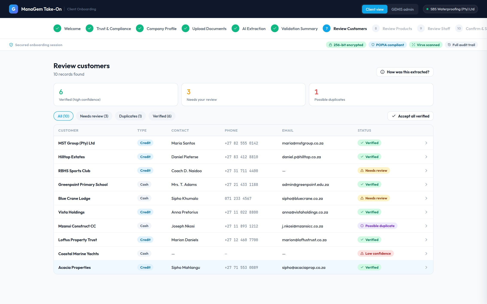
1Confidence badges — Verified Needs review Possible duplicate Low confidence — a spectrum of certainty, never a binary import result.
2The tallies do the triage: review the 3, merge the 1, trust the 6. "Accept all verified" is one click.
3"How was this extracted?" — every record traces back to its source file, row or page, so trust comes from checking, not from being told to trust.
07 · Decision log
Internal stakeholder review Each decision below was presented and defended in the internal review with the GEMIS Director, Product Owner and Lead Developer.
Real-world documents produce a spectrum of certainty. Collapsing it into "imported" or "failed" either hides genuine problems or rejects usable data over a formatting quirk.
Rejected: a single pass/fail validation — it forces an all-or-nothing decision on data the client can't see yet, and gives GEMIS no way to distinguish "two-second glance" from "needs a phone call."
Trust in an AI-populated record comes from being able to check it against the original — file, row, page — not from being told to trust the AI.
Rejected: a generic "AI-extracted" tag. It asks for faith at the exact moment the client's instinct is to be most skeptical.
SA businesses are themselves POPIA responsible parties. They must actively confirm what GEMIS's AI is and isn't doing with their data before a single file uploads.
Rejected: one bundled "I agree to the Terms" checkbox — it hides exactly the facts a compliance-conscious buyer needs to see plainly.
Client review catches what the client can see. A second human GEMIS review catches what only someone who has onboarded hundreds of contractors would recognise.
Rejected: client confirmation as the final gate — it puts 100% of the burden on a first-timer and removes the second-pair-of-eyes safeguard enterprise buyers look for.
POPIA, AI disclosure, encryption and audit trail — each independently checked — tell a reviewer why a client is stuck, not just that they're stuck.
Rejected: a percentage-complete bar. Two clients can both be "60% done" for completely different reasons.
Some clients have no digital records at all for a category. Upload-only onboarding would block them entirely.
Rejected: manual entry via support ticket — it punishes exactly the smaller, less digitised businesses GEMIS also serves.
08 · Stakeholder validation
The redesign was validated through a structured internal review rather than external testing. That review was not a formality: it changed the product, and two of its most visible features exist because of it.
The GEMIS Director, the Product Owner and the Lead Developer — commercial accountability, product accountability and implementation accountability in one room.
Validate workflow feasibility against how the business actually operates · review business alignment · assess implementation practicality within the existing architecture.
Supported: the five-zone shell, confidence-based review in Take-On, and consent-first onboarding. Refinements requested: critical issues must be visible globally, and each module should open with its operational health.
Two additions came directly out of review — the Executive Priority Banner and contextual KPI Summary Panels — and the navigation structure was kept compatible with the legacy platform's mental model for a phased rollout.
Approved for implementation The proposed redesign was approved internally as the direction for implementation.
The redesign was not a single-pass solution. Two decisions in particular show how it evolved through collaboration with the people accountable for the business.
During the stakeholder review, the Director emphasised that critical operational issues should never be hidden inside individual modules. In response, the Dashboard gained a persistent Executive Priority Banner — a high-visibility red alert strip reserved exclusively for business-critical information: outstanding approvals, overdue quotations, delayed production jobs, compliance issues, inventory shortages and system-wide operational alerts.
Reasoning: the Dashboard is the first screen users see each day. Surfacing urgent issues there reduces the likelihood of missed actions and improves organisational awareness. It is a deliberate hierarchy decision — the banner earns its colour by being rare, scoped to genuine consequence, and forbidden to routine notifications — not a warning message bolted on. Internal stakeholder review
Stakeholders asked that users understand the health of each business area without navigating multiple screens. In response, key modules — Dashboard, Sales, Projects, Inventory, Finance, Factory, Procurement — open with a contextual KPI Summary Panel showing only the indicators relevant to that module: Sales leads with revenue, open quotations, conversion and outstanding invoices; Inventory with stock value, low-stock items, purchase orders and warehouse utilisation; Factory with active jobs, capacity, delayed orders and completion rate; Finance with cash flow, outstanding payments, monthly revenue and expenses.
Reasoning: rather than forcing users to search for information, each module begins with a concise operational summary that supports faster decisions and situational awareness. These panels are contextual, not generic dashboards — each role sees what is immediately relevant to its responsibilities, which is exactly what the operational roles framework prescribes. Approved for implementation
These stakeholder discussions reinforced an important lesson about enterprise software: users don't simply need access to data — they need immediate visibility into what requires attention. The interface shifted from being a collection of screens to becoming a proactive operational decision-support system.
09 · Design principles
Every AI screen is a review, never an import log. Verbs are "Review", "Confirm", "Accept" — never "Done".
POPIA, encryption and audit-trail status are persistent badges on the screens where clients act — not a link to a document.
One plain-language line per record: "Account type inferred from credit-terms column." Trust the 36, focus on the 4.
One review pattern — filter, badge, reason, source, accept/edit/reject — generalises from Customers to any future category.
10 · Information architecture
Take-On is deliberately not an eleventh module. It lives outside ManaGem entirely and only writes into the five zones once a human has approved what it found. A client should never confuse "data I'm reviewing" with "data that's live in my business."
AI onboarding · its own product
drafts, confidence, review
Dashboard — the shared, role-aware home
Customers · Contacts · Warranties
Enquiries · Invoices · Sage · Targets · Reports
Debtors · Products · Projects · Factory · Stock
Staff · Companies · Users · Settings
11 · Key flows
A sales rep captures a new enquiry, tracks it through open and closed states, and converts it to an invoice — quote templates, sales targets and reporting all one zone away, because a sales manager moves between these constantly.
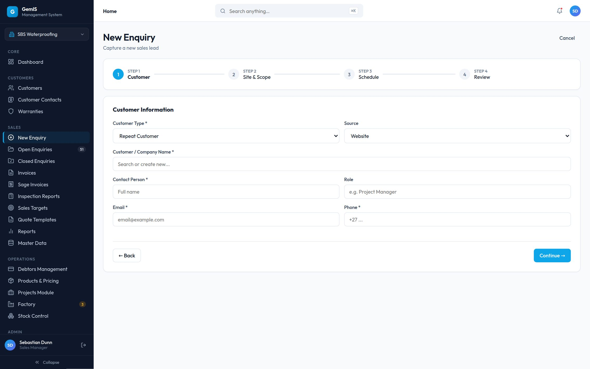
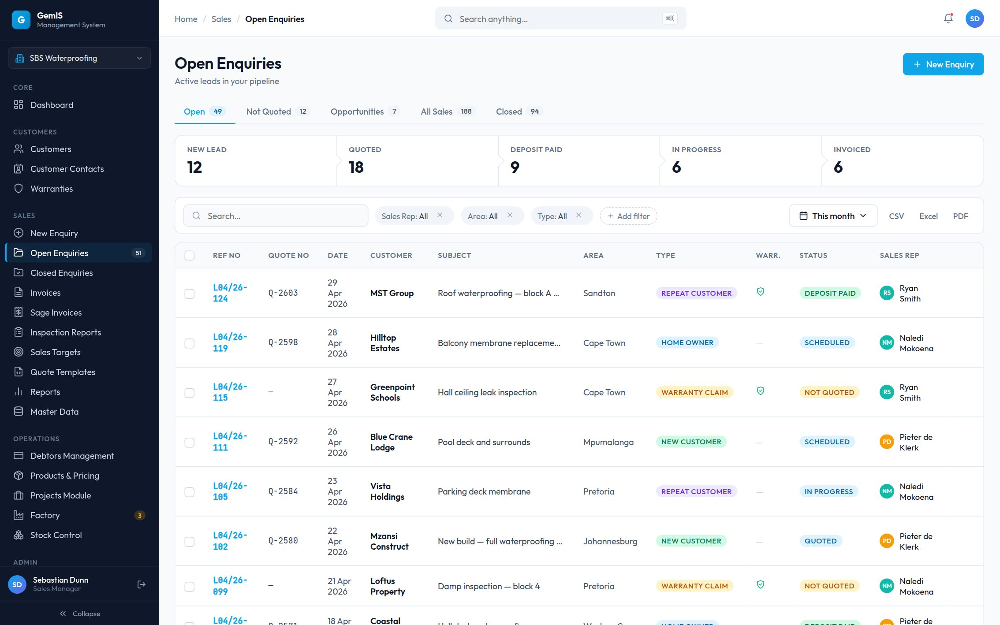
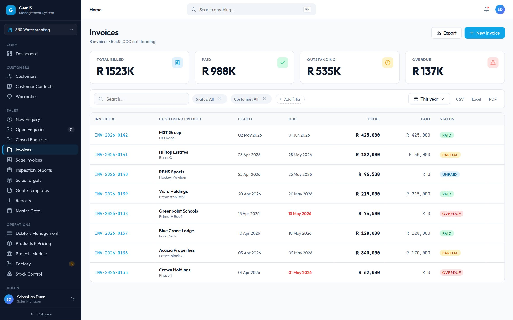
Production sits in the middle of the money chain — a delay here ripples into delivery, invoicing and customer trust. Build stage, progress, foreman and due date live on one card, with a status badge legible without opening the record.
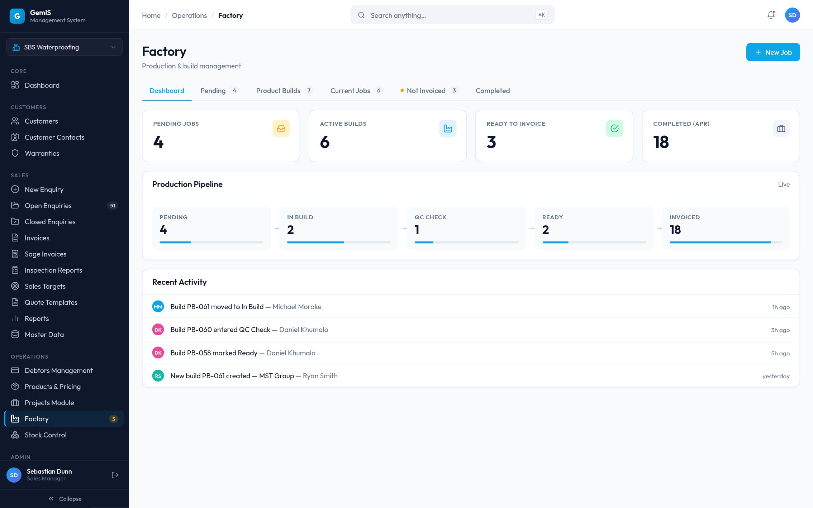
The full journey, exactly as built in Take-On's step sequence — ending in two separate, sequential gates.
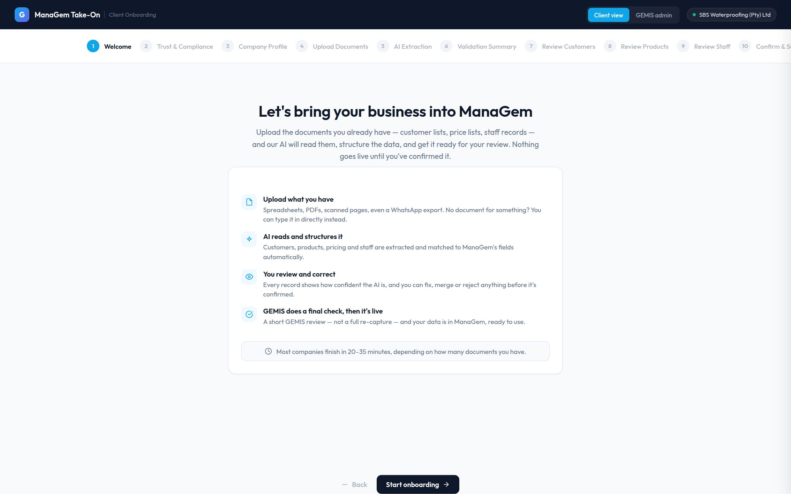
STEP 01The product introduces itself and the journey ahead — "nothing goes live until you've confirmed it"
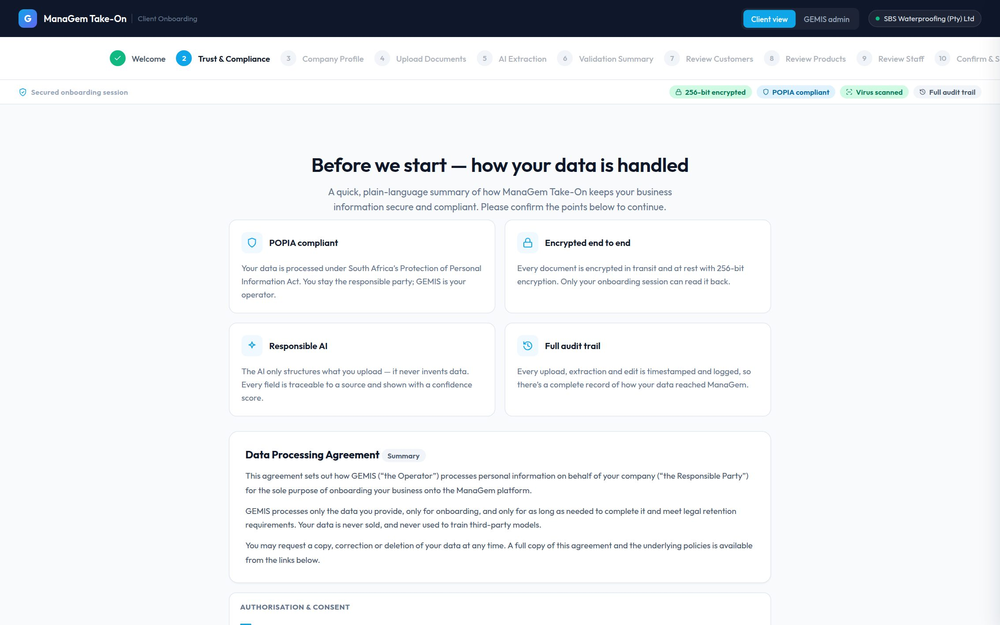
STEP 02Itemised consent before a single upload
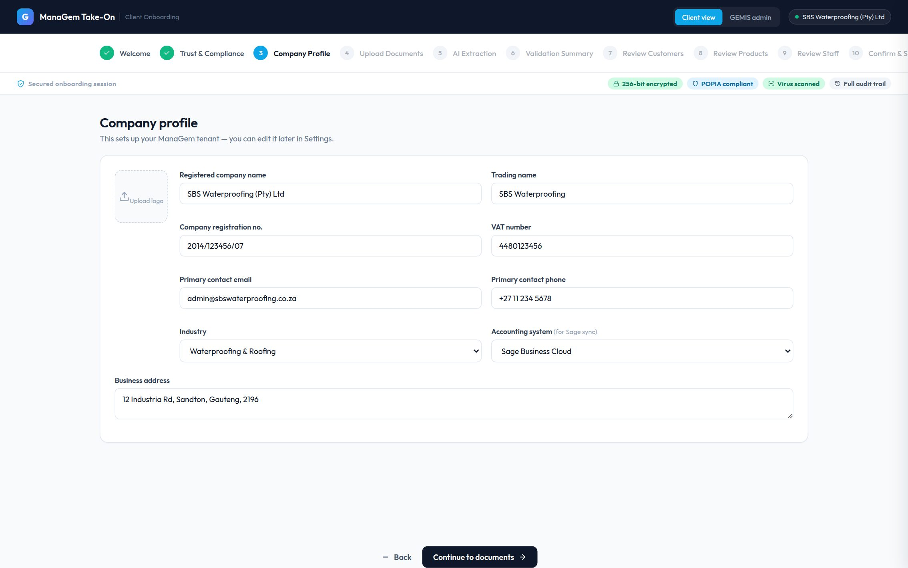
STEP 03The business describes itself once
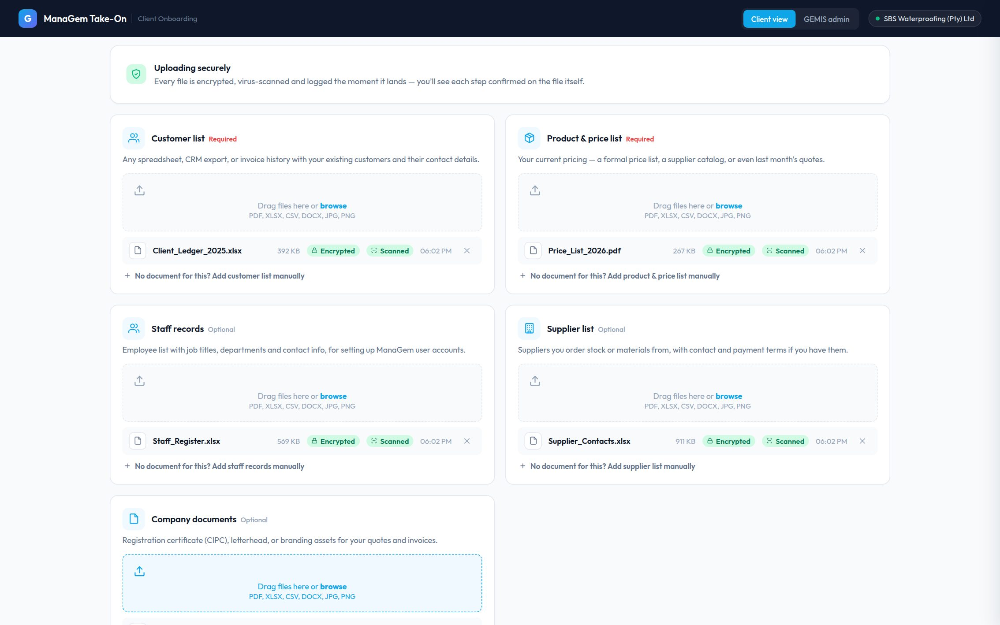
STEP 04Every file encrypted, virus-scanned and logged the moment it lands
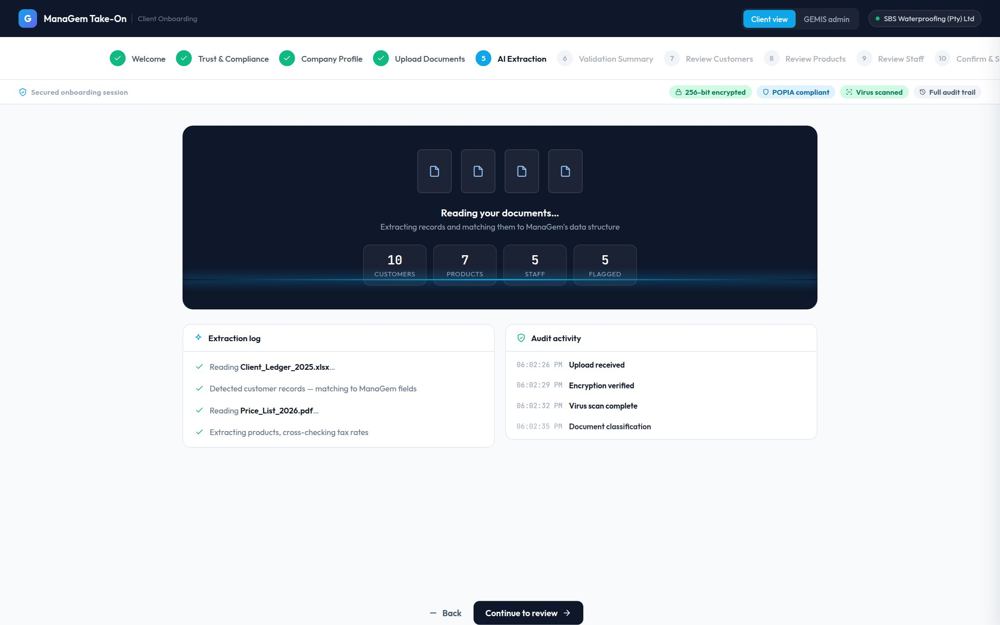
STEP 05Structuring into ManaGem's schema, scoring confidence
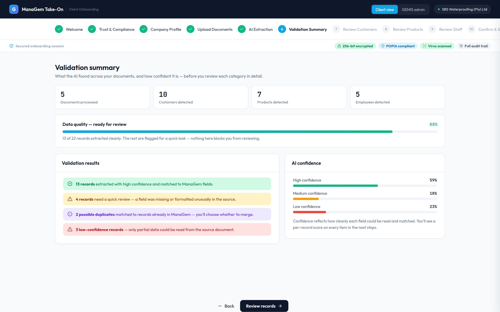
STEP 0613 of 22 clean, the rest flagged — before any detail review
One shared pattern, per category
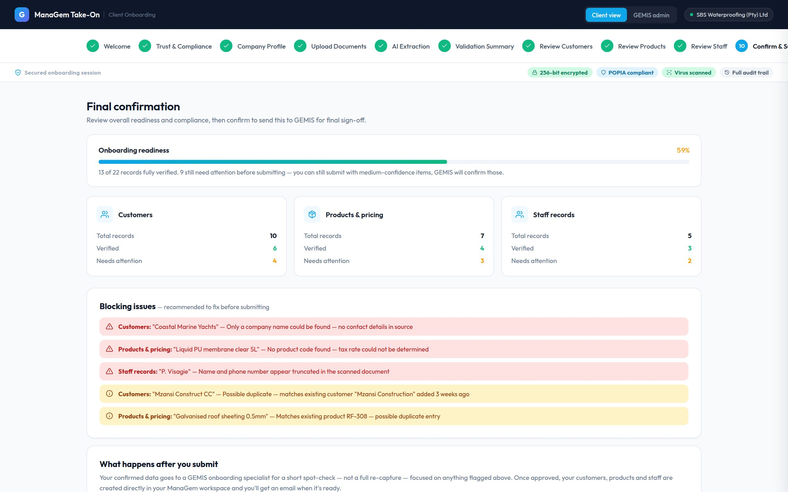
GATE 1The client has confirmed
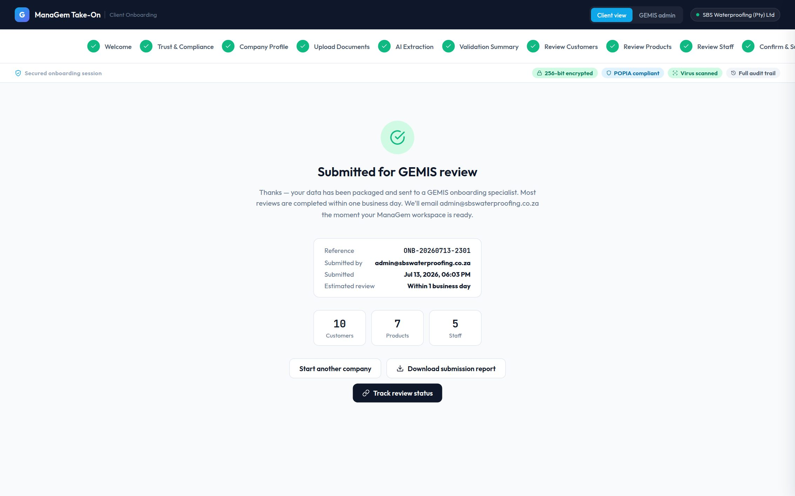
GATE 2A second pair of expert eyes — then live
Every thumbnail above is the real screen, captured from the working Take-On build.
12 · The working prototypes
Both products, running live inside this page — the same builds every screenshot in this case study was captured from.
The complete Take-On client wizard — consent, simulated secure upload, AI extraction, validation and all three review categories — plus the GEMIS Take-on queue, and ManaGem's shell: login, navigation, Dashboard, Factory, Stock Control and the sales views.
Module list views run on representative mock data; some actions — exports, certain drawers and row actions — demonstrate the pattern without executing it.
Edge and error states, some admin detail views and mobile behaviours are specified in the design system rather than built into these prototypes.
Sage synchronisation flows, the permissions administration journey, offline and connectivity-loss states, and the Executive Priority Banner and per-module KPI panels adopted at stakeholder review.
Prototype scope Stated so reviewers know exactly what they are seeing — and what remains concept.
Interactive Sign in with any username and password, then explore the modules — Dashboard, Factory, Stock Control, Open Enquiries.
13 · Feature deep dive
Production delays and material shortages were previously invisible outside the production module — so sales kept promising delivery dates production couldn't hit. The fix: surface production-affecting events to the roles downstream of production. Scoped to events with genuine consequence — delay risk, material shortfall — never general status chatter.
A sales manager's view: no signal that job P26-031 is three days behind. The first person to find out is the customer.
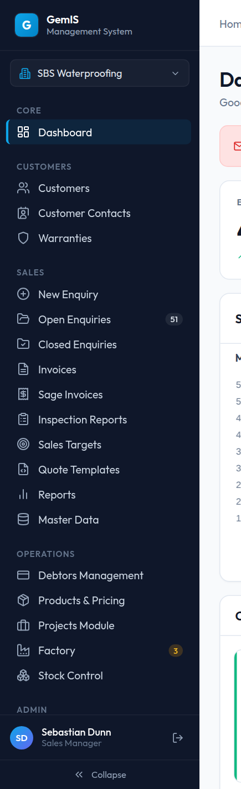
7 Vista Close
14 · Feature deep dive
The blocker was never extraction accuracy — OCR and AI were already good enough. The blocker was trust. A fully automated "black box" import would have been faster to build and faster to demo. It was rejected, because the target buyer — a larger South African company with its own compliance obligations — will trust a slower, explainable process over a faster, opaque one every time.
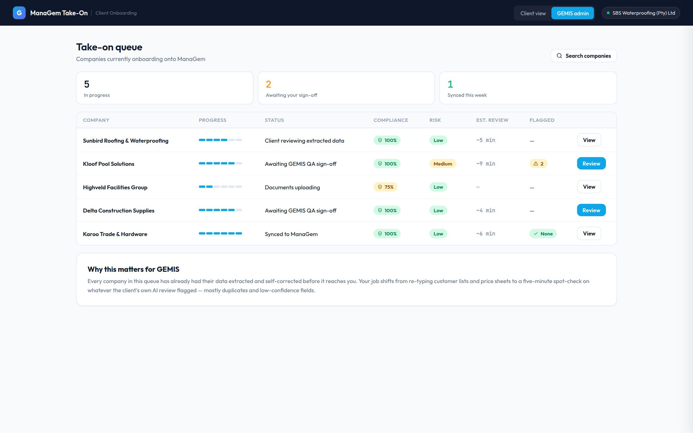
"I understand I will review and confirm every category, and nothing goes live until I approve it and GEMIS completes its check."
15 · Constraints & trade-offs
16 · Success measurement framework
The redesign has been approved for implementation but has not yet entered production. No production analytics exist, and none are claimed here. The following framework defines the measurements that would be used after deployment.
| Business objective | Success metric | How it would be measured | When it would be evaluated |
|---|---|---|---|
| Shorten the onboarding runway | Elapsed time from signed contract to client review complete | Take-On stage timestamps, per client | After each of the first five onboardings |
| Reduce manual capture effort | GEMIS reviewer hours per onboarding | Review durations logged in the Take-on queue | Quarterly |
| Data quality at go-live | Share of extracted records confirmed without edits vs edited vs rejected | Take-On review outcome logs, per category | After every onboarding |
| Production visibility for downstream roles | Engagement with Factory alerts by non-production roles; delivery-date changes communicated before due date | Alert interaction events; enquiry timeline entries | Sixty days after rollout, then quarterly |
| Faster revenue cycle | Enquiry-to-invoice cycle time | Sales module timestamps across the enquiry lifecycle | Quarterly, against pre-rollout baseline from the legacy system |
| Lower support burden | Onboarding- and navigation-related support requests | GEMIS support ticket categories | First two quarters after rollout |
17 · Accessibility
The design system treats accessibility as a requirement every component must pass before it ships, aligned with WCAG AA as the enterprise baseline.
Every interactive element is reachable and operable by keyboard, with visible focus states specified in the system — power users spend six-plus hours a day here, many of them keyboard-first.
WCAG AA contrast on the light canvas and the dark navy rail alike; secondary text never drops below the system's slate-500, and colour is never the only carrier of state.
44–48px rows, 13px minimum body type, 11px uppercase headers, truncation with tooltips — density without shrinking type below legibility.
Inline, plain-language validation; destructive actions demand confirmation; and Take-On's two-gate submission means no irreversible action happens on a single click.
44px minimum touch targets; below 720px, tables collapse to labelled cards and the sidebar becomes a drawer — designed for factory floors and site visits, not just desks.
Designed skeleton loading states, empty states with a clear next action instead of dead ends, and full prefers-reduced-motion support — motion in the system never exceeds 200ms as it is.
18 · Reflection
How much of the real problem lived in the sequence of trust-building rather than in extraction accuracy. The internal consensus was consistent: a business owner will forgive an AI getting a phone number wrong far more readily than a product that doesn't explain what it is doing with their customer list.
I began treating this as an interface modernisation and ended treating it as an operational-visibility problem. The stakeholder review accelerated that shift — the Director's insistence that critical issues be visible globally, and the request for per-module health summaries, reframed the dashboard from a report into a decision-support surface.
The Executive Priority Banner and the contextual KPI panels exist because of the internal review, not despite it. Both came from people accountable for the business rather than from a design preference — which is exactly the provenance an enterprise feature should have.
Structured sessions with the GEMIS onboarding team working the Take-on queue against real client documents, and observed walkthroughs of the client wizard with a genuine business owner — the two audiences whose behaviour the design makes the strongest assumptions about.
The framework above, in order of importance: onboarding runway, reviewer hours, and the confirmed-without-edit rate — the single number that will tell us whether confidence-scored review actually earns the trust it is designed to earn.
Enterprise design is negotiated, not decreed: the constraint set — existing architecture, phased rollout, a small engineering team — did more to shape good decisions than unconstrained ideation would have. And in this category, compliance treated as a designed feature rather than a legal checkbox turned out to be a genuine asset.
"In internal review, every version that leaned harder on the AI-powered framing and softer on you stay in control landed worse — with the very people who will sell, support and build this product."